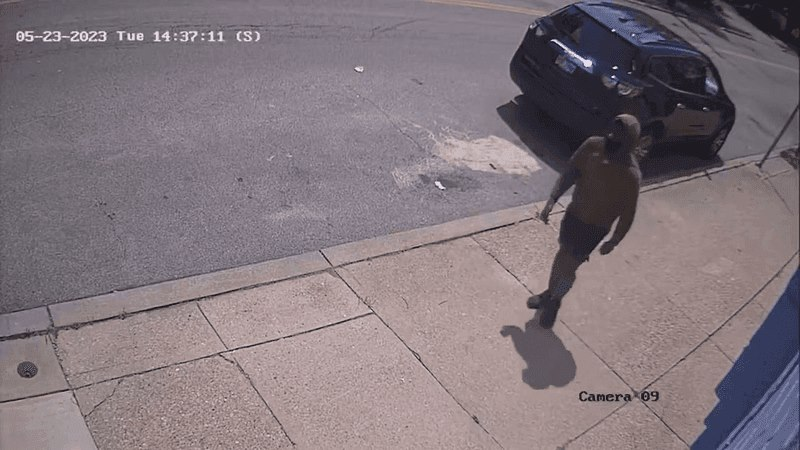
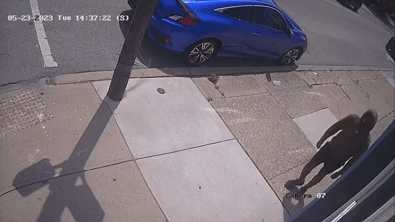
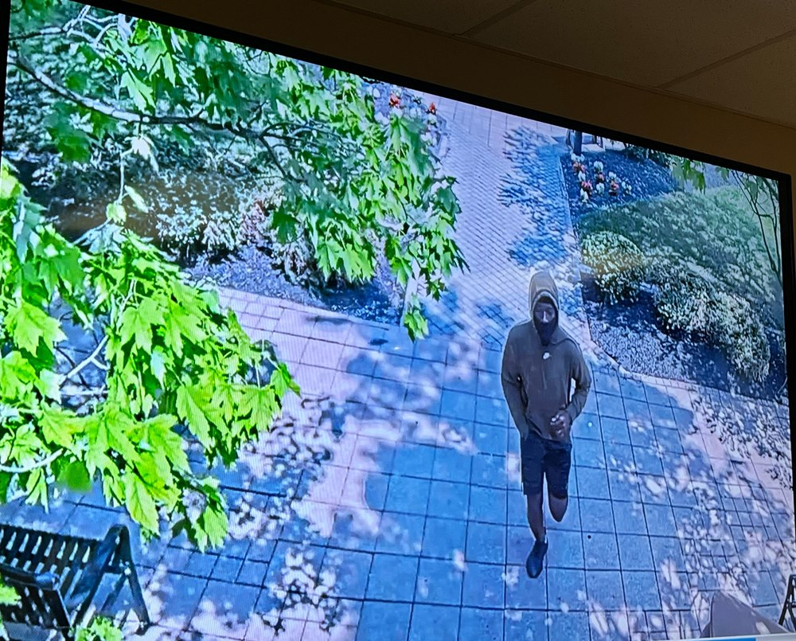
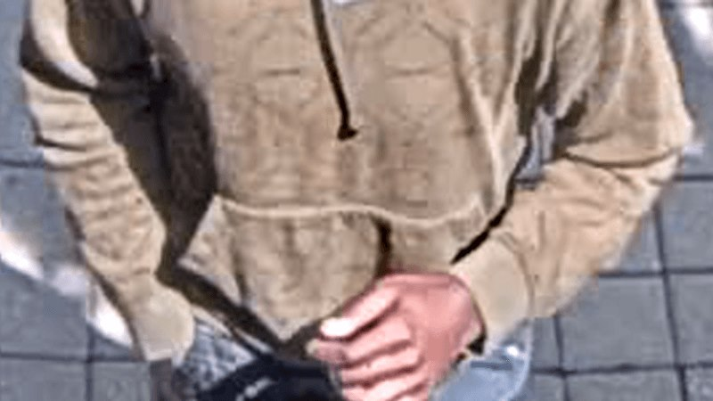
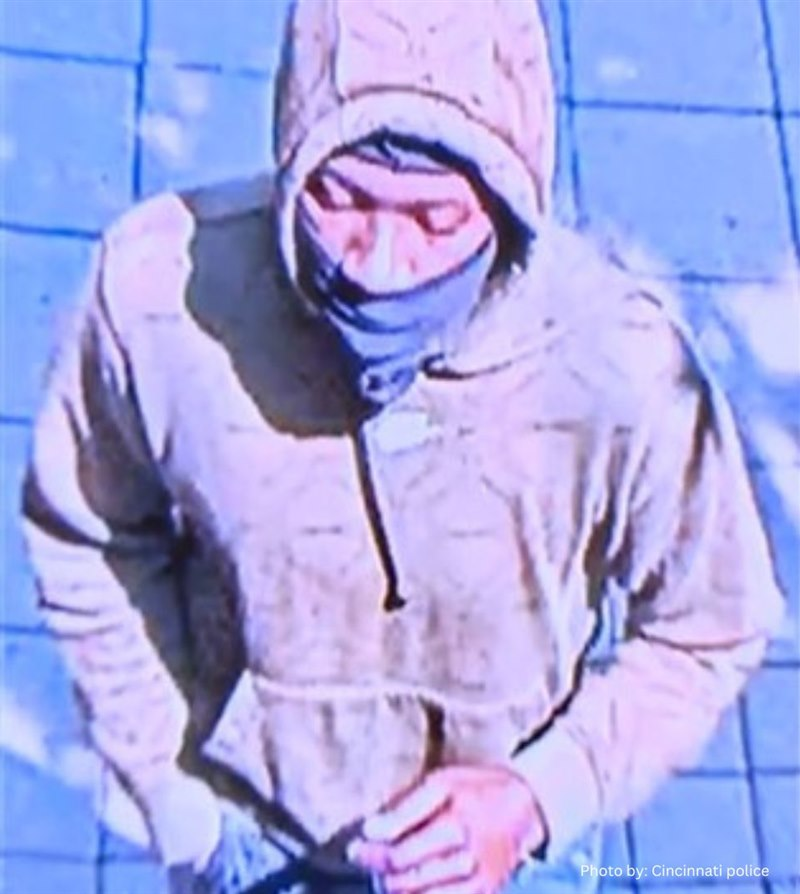

Around 3 p.m. on Tuesday, May 23, 2023, Nicholas Kernan, 43, was doing landscaping work in the 2900 block of Bellevue Avenue in Corryville, near the University of Cincinnati, when a stranger approached him. Police said the man demanded money, and that when Nick said he had none, the man shot him in the head and ran. Co-workers heard the shot. He died at UC Medical Center. He would have turned 44 six days later.
Two weeks later police released images of a person of interest: a man in an olive hoodie, a black face mask and shorts, walking and running through Corryville that day, on camera at 2:37 p.m. Capt. Steve Saunders said "someone is going to recognize that person." Police did not call him a suspect. More than three years on, no arrest has been reported.
Editorial assessment of public sources, not a finding of fact. Nobody named here has been charged unless this page says so.
Details come from WKRC, FOX19, WCPO and the Cincinnati Enquirer (May and June 2023) and the Enquirer's anniversary stories (May 2024 and May 2025, read through their Yahoo copies). Reports differ on the exact corner and time; both are shown below.
Nick joins Uptown Rental Properties, working on the grounds crew as a field technician (Enquirer; WCPO).
Time-stamped video shows the person of interest about half an hour before the gunshot, wearing a hoodie and mask (WKRC). The police frames read 14:37:11 and 14:37:22.
Nick is working near an alley beside a brick apartment building (WKRC). A stranger approaches. A neighbor's doorbell camera records the sound of the gunshot about 3 p.m. (WKRC). Co-workers hear it and run over (WCPO).
Officers are called to Bellevue Avenue near East University Avenue and find him with a gunshot wound to the head (FOX19). An incident log describes a man sprinting from the scene (WKRC). Nick dies at UC Medical Center; police announce the death about 8:30 p.m. (FOX19).
The coroner identifies him. Uptown offers $10,000 and Crime Stoppers $2,500. FOX19 reports that police say the attacker demanded money. Police ask neighbors to check doorbell cameras (FOX19; WKRC).
Chief Teresa Theetge, Capt. Steve Saunders and the family hold a news conference. Saunders calls the shooter armed and dangerous (WKRC). WCPO reports police "do have one suspect"; WKRC reports they are not ready to name one. Police ask for camera footage from within two miles, 1 to 4 p.m.
Police release video and stills. Saunders says the man appears to match the person witnesses saw run, but stops short of calling him a suspect; investigators want to talk to him (WKRC; Enquirer). Too early to say if the shooting was targeted or random (Enquirer).
Lt. Jonathan Cunningham says there is no new information to share. His wife, Melody Kernan, says police told her it may have stemmed from a gang initiation, and that they have given her "more questions than answers" (Enquirer).
His aunt, Bonnie Kernan: "We still have no closure or justice." His mother, Kim Kernan, says a stolen gun was used and that gun owners must be responsible. Police do not answer the Enquirer's request for an update.
Cincinnati police hand out flyers in a four-day push on unsolved homicides. FOX19's report does not mention this case (FOX19).
We found no report of an arrest or charge and no police update after June 2023. The newest report we found is from May 2025. We have not confirmed the status with police.
A 43-year-old husband, stepfather and twin, known at work as a teddy bear.
Photo: Uptown Rental Properties, published by WCPO and the Cincinnati Enquirer. Contact us to have it removed.
DiedA Delhi man (WKRC), married 16 years to Melody Kernan; he proposed on the Carew Tower observation deck, his favorite downtown landmark (WKRC; Enquirer). He loved the Beatles, playing bass guitar, dirt track racing and Christmas. His stepdaughter, Katie Duncan, said he "lit up the world" with his smile and sense of humor, and that about 100 people benefited from his being an organ donor (WKRC). His company's president called him a teddy bear.
Each photo is credited under the picture. Family members or others who want a photo added, changed, or removed can use the contact form at the bottom of this page.
What exists, and what each piece may or may not mean.
| Item | What is known | Disputed or unknown | ||||
|---|---|---|---|---|---|---|
| Person-of-interest images | Cincinnati Police released video and stills on June 7, 2023. Street cameras stamped 14:37 on the day of the shooting: |  Image: Cincinnati Police, via WKRC. Shown to help identify him and keep the case in public view. Contact us to have it removed. |  Image: Cincinnati Police, via WKRC. Shown to help identify him and keep the case in public view. Contact us to have it removed. | A walkway camera: |  Image: Cincinnati Police, photographed on a screen by the Cincinnati Enquirer, June 2023. Shown to help identify him and keep the case in public view. Contact us to have it removed. | His face is covered. Police have not said where each camera is, or which way he was heading. |
| The hoodie and shoes | Saunders called the hoodie "very distinctive" and said the shoes look "fairly distinctive" (WKRC). Police close-up: |  Image: Cincinnati Police, via WKRC. Shown to help identify him and keep the case in public view. Contact us to have it removed. | Olive in police's description, and tan in some stills. A small light mark shows at the chest in the stills; that is our observation, not a police statement. | |||
| Description | Police, June 2023: 5-foot-8 to 5-foot-10, 140 to 160 lbs, olive hoodie, black face mask, shorts (Enquirer). | The first incident log differs: 5-foot-10, 160 to 180 lbs, yellow mask, yellow or orange hoodie, black shorts, race unknown (WKRC). The reports we read give no race, age or hair for him. | ||||
| Doorbell audio | A nearby home's camera recorded the sound of the gunshot about 3 p.m. (WKRC). | WKRC also says a doorbell camera caught the incident; what it shows beyond the sound is not public. | ||||
| Witnesses | Witnesses reported a man running from the scene, and Saunders says the person of interest appears to match (WKRC). | No witness account of the shooting itself has been published. | ||||
| The gun | His mother says a stolen gun was used (Enquirer, 2025). | Her statement only. No report says police confirmed this, or that a gun was found or traced. |
News reports and the images Cincinnati Police released in June 2023 are the public record. We found no Ohio Attorney General listing. The police file is not public.
| Document | Holder | What it shows | Access |
|---|---|---|---|
| Person-of-interest video and stills (WKRC) | Cincinnati Police, published by WKRC | The man in the hoodie on street cameras, 2:37 p.m. | Online, free |
| Police video (WCPO) | Cincinnati Police, published by WCPO | The video and stills. | Online, free |
| Incident detail report | Cincinnati Police, quoted by WKRC and FOX19 | First description and the wound. | Quoted in news |
| Autopsy report | Hamilton County Coroner | Cause and manner of death. | Request needed |
| Case file and full video | Cincinnati Police Homicide Unit | The investigation. | Withheld or sealed |
Access labels: Online, free = we could open it. Fan-hosted copy = a private researcher posted scans; originals are held by the named agency, and we cannot vouch for completeness. Quoted in news = reporters read it; we did not see the document itself. Request needed = held by an agency or court. Withheld = the holder has not released it. We cannot reach non-public records, and we do not try to.
Where people talk about this case online, and how to read it.
| Platform | Live search | What you tend to find |
|---|---|---|
| Google: Reddit | site:reddit.com search | Public Reddit threads that Google has indexed, including old discussions. |
| Google: X and Twitter | X and Twitter posts | Public posts and profiles that appear in search results. |
| Google: Facebook | Public Facebook pages and posts | Only public pages and groups that Google can see. Private groups never appear. |
| Google: Instagram and TikTok | Instagram and TikTok | Public posts, memorials, and videos. |
| Google: forums | Forums and message boards | Long-running true-crime forums. |
| Google News | Latest news | Newest reporting, which is usually more reliable than posts. |
| Search Reddit | Long discussion threads and theories, often by amateur researchers. No sign-in needed to read. | |
| X (Twitter) | Search X | Short posts, news links, and anniversary notes. May require sign-in. |
| Search Facebook | Public groups and family or community pages. Requires sign-in. | |
| Search #nicholaskernan | Memorial and true-crime posts. Requires sign-in. | |
| YouTube | Search YouTube | Documentaries, news clips, and interviews. Quality varies widely. |
Be careful with online theories. Naming a private person as a suspect can harm an innocent family, and many "identifications" on forums have been wrong. Our own tools could not read these platforms: Reddit blocks automated access, and the others require an account. The Google searches above work from your browser. To get new public mentions by email, make a free Google Alert for the case name in quotation marks.
What local and national reports say, and when we last checked for a solution.
| Date | Outlet | What it reported | Link |
|---|---|---|---|
| May 23, 2023 | FOX19 | Homicide investigation on Bellevue Avenue near East University. | Read |
| May 24, 2023 | FOX19 | Victim identified; police say the attacker demanded money; $10,000 and $2,500 rewards. | Read |
| May 24, 2023 | WKRC | Doorbell camera catches the gunshot; incident log describes a man sprinting away. | Read |
| May 26, 2023 | WKRC | News conference: shooter called armed and dangerous; family speaks. | Read |
| June 7, 2023 | WKRC | Police release images of a person of interest; hoodie and shoes called distinctive. | Read |
| June 7, 2023 | Enquirer | Description: 5-foot-8 to 5-foot-10, 140 to 160 lbs; not called a suspect. | Read |
| May 24, 2024 | Enquirer | One year: no new information; his wife says police mentioned a possible gang initiation. | Read |
| May 23, 2025 | Enquirer | Two years: no arrest; his mother says a stolen gun was used. | Read |
Status is re-checked on a regular schedule. If you know of a development we missed, use the clue form near the top of this page or the contact form, and include a link.
One unidentified person of interest. No one has been named or charged.

Image: Cincinnati Police, via WCPO, June 2023. Colors are distorted in this copy. Person of interest, not called a suspect, not charged. Shown to help identify him and keep the case in public view. Contact us to have it removed.
Person of interestWhy named: On video walking and running through Corryville that day, in a hoodie and mask in 80-degree heat, about half an hour before the shot. Saunders said he appears to match the man witnesses saw run (WKRC).
Against: Police stopped short of calling him a suspect and said they simply want to talk with him. Being in the area is not proof of anything. His face is covered and he has never been publicly identified.
Where a card shows a silhouette, we found no photo. Anyone who wants a photo added, changed, or removed can use the contact form at the bottom of this page.
The most recent report we found is the Enquirer, May 23, 2025. The last police update it cites is June 2023.
We put the chance that the person of interest was the shooter at roughly 60%: he matches the man seen running, but police have not called him a suspect. We put the chance of a charge within five years at roughly 20%. These are our judgments, not findings.
Editorial judgment, not statistics.
"—" means no public information, not a clean result.
| Person or idea | At the scene | Physical link | Legal outcome |
|---|---|---|---|
| Man in the olive hoodie | ? in the area on video; matches the runner | — | — unidentified |
| Unnamed "suspect" (May 2023) | ? police statement | ? not public | — never named |
✗ excluded or contradicted · ✓ supports · ? disputed · — nothing public. No cell is an official finding.
Editorial reading of public records. A working theory, not a finding, and it names no individual.
Judgment, not statistics.
Questions raised by gaps in the public record.
Whether any camera caught him without the mask, before or after.
Where he came from, where he went, and whether a car was waiting.
Whether the suspect police described in May 2023 is the man in the images.
Why police described a robbery, and what the gang initiation idea rests on.
How anyone knows it was stolen, and whether police have it.
"Not public" means we could not find a report.
| Item | Tested | Gap |
|---|---|---|
| Video | Clips and stills released June 2023 (Cincinnati Police). | Full footage not public. |
| Ballistics | Not reported. | Whether a casing or bullet was recovered is not public. |
| Gun | Stolen, per his mother. | Not confirmed by police in any report we read. |
| Police file | Cincinnati Police Homicide Unit. | Not public; the case is open. |
| Tool | What it could do | Status here |
|---|---|---|
| Ballistics database (NIBIN) | Link a casing or gun to other shootings. | Not reported |
| Gait and clothing comparison | Match the hoodie, shoes and walk across camera angles. | Not reported |
| Phone location records | Show which devices were near Bellevue Avenue at 2:37 and 3 p.m. | Not reported |
Local cases that moved after decades.
Investigators say a private genealogy investigation helped them identify Thomas Dunaway, who died in 1990, as the man who killed the 16-year-old. He cannot be indicted, so prosecutors sent a letter saying he would have been charged. The lesson: genealogy can name a killer after decades, even when no trial is possible.
In 2024, local investigators were being trained in the technique, which has already helped solve Cincinnati-area cases, according to FOX19. The lesson: the tool is now local, so cases with usable DNA have a real path forward.
Old crime-scene DNA matched relatives in a public database and led to a 2018 arrest. The lesson: a usable sample can still work after decades.
Case details come from public news coverage and the Boone County Sheriff's cold-case list. Confirm in court records.
| Claim | Source and date | Where it stands |
|---|---|---|
| Kyle Mirick (Corryville, Apr 2025) | Enquirer, Apr 2025 | A different shooting on Short Vine Street, in which a 15-year-old was arrested. No report ties it to this case. |
| Dujawn "Sam" Foster III (Corryville, Mar 2024) | WKRC, Mar 2024 | A separate fatal shooting at a party on Fosdick Street. No report ties it to this case. |
| The exact corner | WKRC, WCPO, FOX19 | Reports give Bellevue near East University, Bellevue and Donahue, and (once) East University and Highland. Most agree on the 2900 block of Bellevue Avenue. |
| Yellow hoodie and mask | Incident log via WKRC, May 2023 | The first log described a yellow mask and a yellow or orange hoodie. Police later said olive hoodie and black mask. Look at the images, not only the first description. |
The shooting was in the 2900 block of Bellevue Avenue in Corryville, close to the University of Cincinnati and UC Medical Center. The location is approximate.
Open in maps: 2900 block of Bellevue Ave., Corryville (approximate). We show no photograph of the scene.
| Source | Type | Rating | Use with care because |
|---|---|---|---|
| WKRC (May 24, May 26, June 7, 2023) | Local TV | A | Read in full; incident log, news conference, police images. |
| WCPO (May-June 2023) | Local TV | A | Read in full; pages show no date, so dates are worked out from the text. |
| FOX19 (May 23-24, 2023) | Local TV | A | Read in full; the robbery demand, attributed to police. |
| Cincinnati Enquirer (2023-2025) | Newspaper | A | Read through Yahoo copies; cincinnati.com blocks our tools. |
| Ohio Attorney General database | Agency | n/a | Our Nov 2026 search showed no Kernan listing. |
513-352-3542.
513-352-3040; tips can be anonymous.
Charging decisions.
Under the Ohio Public Records Act, I request copies of non-exempt records relating to the May 23, 2023 shooting of Nicholas Kernan in the 2900 block of Bellevue Avenue, Corryville, Cincinnati, including incident reports, laboratory reports, and any evidence inventory. Please send electronic copies. If any part is withheld, please identify the exemption relied on and release all reasonably segregable material.
Agencies often withhold records of open investigations, so expect partial answers.
Nick was 43, with a wife, stepdaughter, twin brother and a family still asking for answers. If you are family or a friend, we would welcome a correction, a memory or a statement, and we will never publish anything you ask us not to.
Loading headlines…
Every fact on this page comes from one of these. Where they disagree, we say so above.
The newest report we found is from May 2025, and we have not confirmed the status or the rewards with police. We found no Ohio Attorney General listing and no Websleuths thread. The stolen gun rests on his mother's statement, and the gang initiation idea on his wife's account of what police told her. Colors in the police images vary because they come from different cameras and copies.